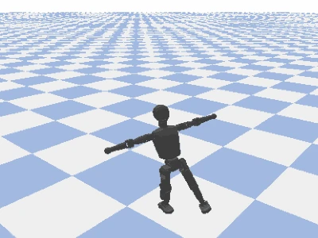
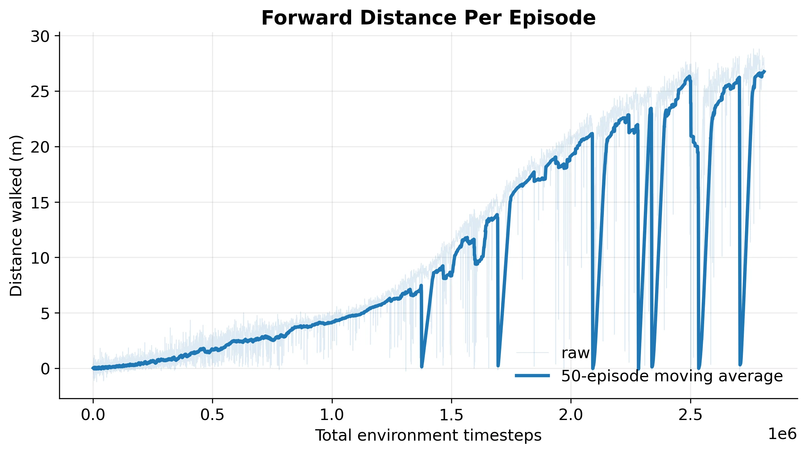
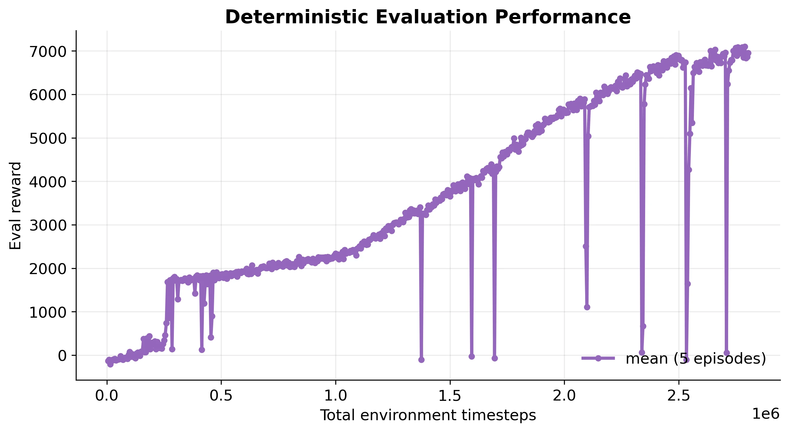

Teaching a humanoid to stay on its feet.
A team comparison of PPO and SAC on a 13-DoF walking task. The interesting part was not just getting a gait. It was seeing what the reward function actually taught the robot.
- Team
- Drew Burcher, Dan Torri, Nathan Wyatt
- Context
- Virginia Tech · Spring 2026
- Tools
- PyBullet · Stable-Baselines3
- Results
- Simulation only

The task
We loaded the Booster Robotics T1 into PyBullet and trained policies to move forward while staying upright. The policy controlled 13 joints: the waist and six joints in each leg. The arms were held fixed.
Physics ran at 240 Hz, with policy actions at 60 Hz. A 36-dimensional observation combined torso state with joint positions and velocities, and the policy produced joint-position targets.
We used PPO and SAC from Stable-Baselines3 with a reward combining forward velocity, survival, energy cost, stability, and a fall penalty.
What the runs showed
SAC learned to stand before developing a walking phase. By roughly 2.8 million environment steps, the policy reached about 1.6 m/s and traveled about 26 m in a 16.7-second episode. PPO showed stepping behavior but did not achieve a sustained gait within the project timeline.
| Measure | PPO | SAC |
|---|---|---|
| Environment steps | 1.4 million | 2.8 million |
| Best evaluation return | 3,000 | 7,100 |
| Best forward speed | 0.4 m/s | 1.6 m/s |
| Sustained gait | Not achieved | Achieved in simulation |

The reward was the hard part
A policy can score well without moving the way we intended. With smaller energy penalties, the robot exploited high-frequency leg motion. We also adjusted ankle control gains after seeing behavior that was more useful to the physics engine than to a real walking robot.
The final gait was still unconventional: bent knees, short hopping motions, and a forward-leaning torso. There was no imitation target or periodic gait signal telling the policy to walk like a person.
Long SAC runs also showed abrupt collapses followed by recovery. That makes the full training history more informative than a single final reward number.

Code, paper & limits
This was a team project by Drew Burcher, Dan Torri, and Nathan Wyatt. The code, report, and original visual artifacts are available in the project repository.
We did not deploy these policies on a physical T1. Fixed arms simplified the task, and the reported speeds and returns describe this simulation setup. The differing training budgets also limit what the PPO/SAC comparison can establish.